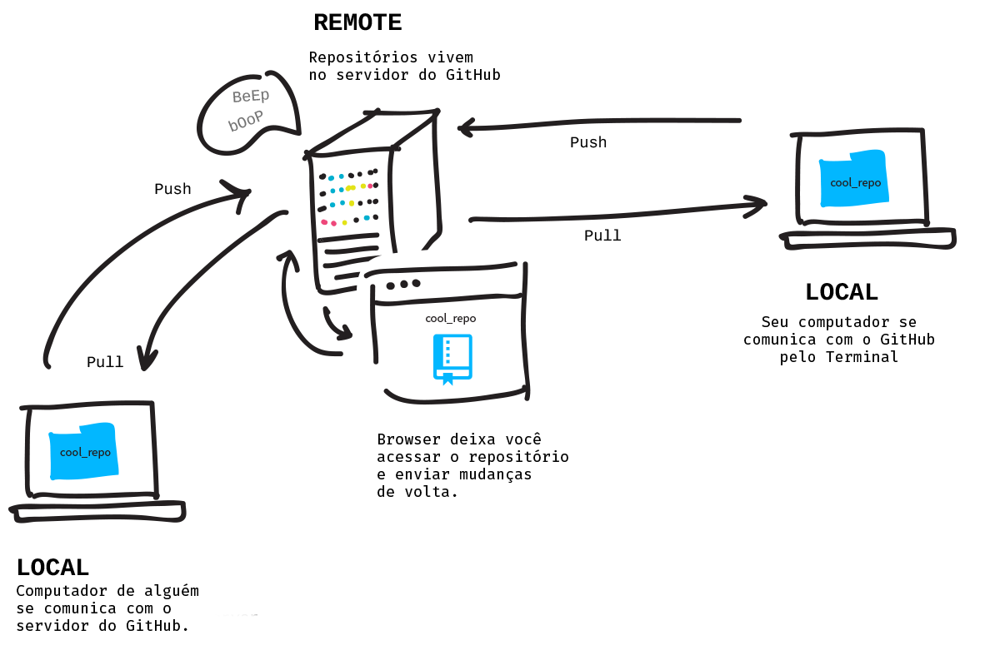

Conecte seus repositórios local e remoto e então publique as mudanças.
Remotos
Quando você coloca um repositório no GitHub, este vive nos seus servidores. Isso o torna um repositório remoto, pois ele não está no seu computador, mas sim em um servidor, "remoto" e em algum outro lugar. Por enviar (push) suas mudanças locais (no seu computador) para o remoto, você o mantém atualizado.
Outras pessoas poderão, deste modo, receber as mais recentes atualizações do seu projeto por puxar (pull) as suas alterações que foram publicadas no remoto para seus respectivos computadores. É assim que todo mundo pode trabalhar em um mesmo projeto sem precisar acessar cópias locais de compuradores dos outros.
Criar um Repositório Remoto
Você deseja sincronizar o seu repositório local com um armazenado no GitHub.com. Para criar um repositório remoto, primeiramente crie um novo repositório no GitHub.com.
- Vá para github.com, faça log in, e clique no botão '+' no canto superior direito e então clique em "New repository" (Novo Repositório).
- Dê a ele um nome que corresponda ao nome do seu repositório local, 'hello-world', e uma curta descrição.
- Deixe ele público. Isso significa que ele será listado no seu perfil.
- Não inicialize com um arquivo README porque já possuímos este arquivo, localmente, nomeado 'readme.txt'. Esta função do GitHub é apenas uma ajuda para casos em que você ainda não fez isso.
- Deixe .gitignore e "license" (licença) marcados como "none" (nenhum). Nós não vamos nos preocupar com isso neste projeto.
- Clique no botão de criar repositório!
Readmes (Leia-me), .gitignores e Licenses (Licenças)
Estes são arquivos comuns em projetos open source, portanto, quando você cria um novo repositório no GitHub, ele ajuda a facilitar a inicialização do seu projeto propondo a adição destes.
Um arquivo readme explica o que o projeto é, como usá-lo, e, algumas vezes, como contribuir, apesar de certas vezes existir um arquivo extra, CONTRIBUTING.md (contribuindo), para esses detalhes.
Um arquivo .gitignore é uma lista de arquivos que o Git não deve rastrear, por exemplo, arquivos com senhas!
Um arquivo license é o tipo de licença que você atribuiu ao seu projeto. Informações sobre os tipos de licença podem ser vistas aqui: choosealicense.com.
Conecte seu Local ao Remoto
Agora que você possui um repositório vazio inicializado no GitHub.com. No topo, você verá 'Quick Setup' (Configuração Rápida), certifique-se de que o botão 'HTTP' está selecionado e copie o endereço — este é o endereço de seu repositório nos servidores do GitHub.
Novamente no terminal e dentro da pasta 'hello-world' que você inicializou como um repositório Git anteriormente em um desafio, você deve ensinar ao Git o endereço do seu repositório remoto no GitHub. Você pode ter vários remotos, portanto cada um precisa ter um nome. O remoto primário é, geralmente, chamado de origin.
Para adicionar um remoto no seu repositório:
git remote add origin <URLDOGITHUB>
Seu repositório local agora sabe aonde está o seu remoto, chamado de "origin" e que ele vive nos servidores do GitHub. Pense nisso como adicionar um contato à sua lista telefônica do celular para poder ligar para esta pessoa sem ter que escrever seu número todas as vezes.
Usuários de Windows:
Se você tiver o GitHub Desktop no seu computador, um remoto será automaticamente criado chamado "origin" nos seus repositórios locais. Neste caso, você só precisa mudar o URL associado ao remoto "origin". Use este comando ao invés do "add":
git remote set-url origin <URLDOGITHUB>
Publicar o Seu Trabalho para o Remoto
Agora você precisa fazer o push (publicar) tudo o que você fez localmente para o GitHub. Isso é algo que você irá fazer com frequência para que seu remoto sempre esteja atualizado e correspondendo às alterações que você fez no seu repositório local.
O Git tem um sistema de ramificação de forma com que você pode trabalhar em diferentes partes de um projeto em momentos diferentes. Estas ramificações são conhecidas como branchs. Iremos aprender mais sobre isso mais tarde, mas, por padrão, o primeiro branch é nomeado "master". Quando você faz push (publica) ou pull (recebe) de um projeto, você deve dizer ao Git o nome do branch e o nome do remoto com quem você deseja transferir dados.
Neste caso, enviaremos o nosso branch chamado "master" para o nosso remoto no GitHub chamado de "origin".
git push origin master
Agora, vá até o GitHub e atualize a página do seu repositório. Ora Ora Ora! Tudo está exatamente igual tanto no seu local quanto no remoto. Parabéns pelo seu primeiro repositório público!
- Adicionar remotos
- Mudar o URL de um remoto
- Receber mudanças de um remoto
- Ver os endereços dos remotos
- Enviar mudanças
git remote add <NOMEDOREMOTO> <URL>
git remote set-url <NOMEDOREMOTO> <URL>
git pull <NOMEDOREMOTO> <NOMEDOBRANCH>
git remote -v
git push <NOMEDOREMOTO> <NOMEDOBRANCH>